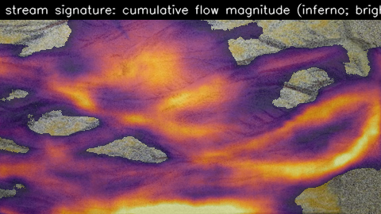
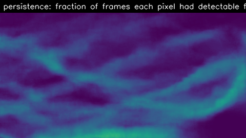

Dense optical flow between consecutive Kinect color frames. The stream signature accumulates per-pixel motion magnitude across the run, weighted by how often each pixel had detectable flow — bright regions are persistent channels, not transient noise.
Channel-network reading
A single dominant channel forms in the first ~30 s along the bed's mid-line and stays there for the rest of the run — the bright corridor on the long axis. Two narrower side branches appear past t = 60 s once the main channel cuts deep enough to spill. The persistence map confirms it: central corridor in > 70 % of frames; side branches in 20–40 %; ridges between never carry water. This pattern aligns with the rectified Δheight scour zones (see Bed heightmaps), and is the empirical anchor for Phase 3's burn-perturbation map.
direction
speed
→
0 → 4 px/fr
signature
low → high
primary results
Per-frame flow vs. accumulated stream signature
Left: live optical flow overlaid on the bed (hue = direction, brightness = speed). Right:
where water moved most over the entire run, painted onto the bed.
flow overlay (timeline)
flow_overlay.mp4 · 2 Hz
stream signature on bed
cumulative · inferno

supporting maps
Signature alone & motion persistence
Signature without the bed underneath isolates the channel network. Persistence shows what
fraction of frames each pixel had detectable motion — a different read on the same data.
stream signature (isolated)
no underlay

flow persistence
fraction of frames w/ motion · viridis
